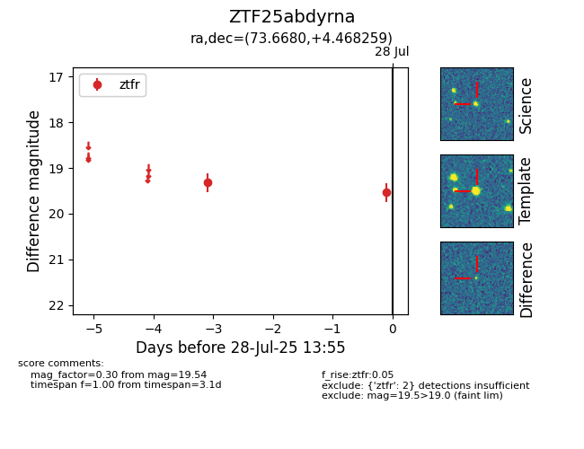

Target ZTF25abdyrna at 2025-07-28 13:55, see:
FINK: fink-portal.org/ZTF25abdyrna
Lasair: lasair-ztf.lsst.ac.uk/objects/ZTF25abdyrna
ALeRCE: alerce.online/object/ZTF25abdyrna
alt names
ZTF25abdyrna (ztf,fink)
coordinates:
equatorial (ra, dec) = (73.6680,+4.46826)
galactic (l, b) = (194.4411,-23.40514)
photometry
last ztfr=19.54
2 ztfr detections
